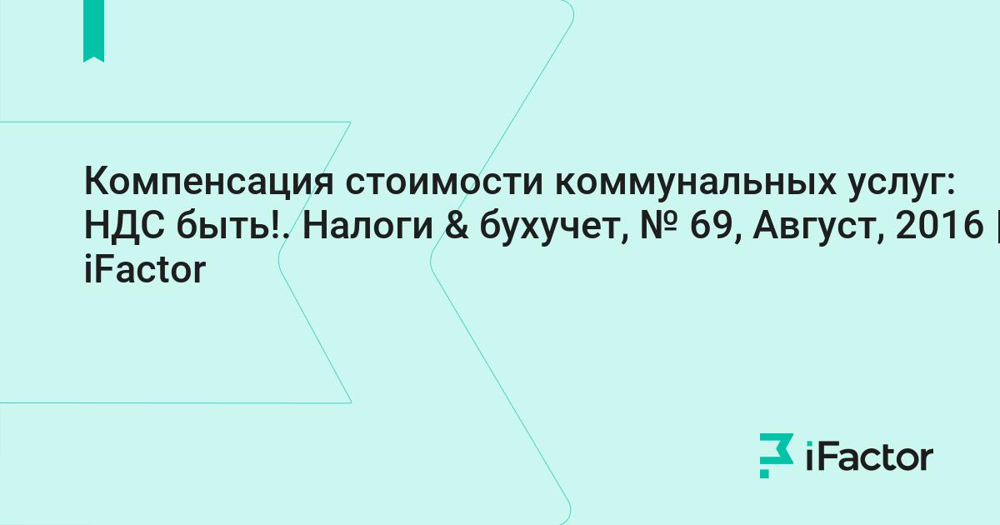

Welcome to Компенсация НДС
Компенсация НДС при УСН в смете в 2020 году: формула и правила расчета — ПоДелу.ру
2020.10.03 09:03Компенсация НДС при УСН в смете в 2020 году: формула и правила расчета — ПоДелу.ру Расчет РКО Список банков Эквайринг Статьи Ваш город: Москва Расчет РКО Список банков Эквайринг Статьи Ваш город: Москва Главная > Статьи > Налоги > Компенсация НДС в смете при упрощёнке Налоги | 9338 5 Компенсация НДС в смете при упрощёнке
Как правило, бизнесмены на УСН работают без НДС. Но в некоторых случаях те, кто использует упрощёнку, тоже должны платить этот налог. О базовых случаях уплаты НДС при УСН мы писали в отдельной статье.
Но есть исключение для компаний, которые рассчитывают стоимость работ или услуг по смете. Расскажем, как включить НДС в смету и потом компенсировать.
СодержаниеКто может компенсировать НДС на УСН
Ошибки подрядчиков на УСН при включении НДС в смету
Не учитывать НДС в смете, принимать как расходы
Включить НДС в смету и выставить счёт-фактуру
Как рассчитывать НДС в смете при УСН
Кто может компенсировать НДС на УСН
Если подрядчик применяет УСН, а заказчик — общую налоговую систему, это вовсе не означает, что строительная компания должна «подарить» партнёру 20 % от своих затрат на материалы и входящие услуги.В расчёте сметы НДС выделяется отдельной итоговой графой, убрать которую нельзя, даже если подрядчик использует упрощёнку. Для таких бизнесменов предусмотрен механизм возмещения НДС при УСН. Для этого в смете ячейку «НДС» нужно заменить на «Компенсация НДС при УСН».
Ошибки подрядчиков на УСН при включении НДС в смету
Некоторые компании на упрощёнке работают с НДС неправильно: они либо вообще не учитывают НДС, либо рассчитывают и выставляют заказчику счёт-фактуру с ним. Оба эти варианты некорректны.
Не учитывать НДС в смете, принимать как расходы
Иногда упрощенцы вообще не учитывают НДС в смете. А сумму входящего налога по материалам и услугам относят на накладные расходы. В этом случае организация понесет дополнительные убытки из-за того, что НДС не будет учтен при расчете цены работ для заказчика.
А если подрядчик использует УСН с объектом «Доходы минус расходы», то такой вариант учета приведет еще и к претензиям со стороны налоговиков. В этом случае будут завышены затраты подрядчика и, следовательно, занижен упрощённый налог. В итоге инспекторы при проверке доначислят его, а также взыщут штрафы и пени.
Включить НДС в смету и выставить счёт-фактуру
Некоторые строительные компании на УСН рассчитывают НДС и выставляют заказчику счёт-фактуру. Но в этом случае подрядчик должен будет сдать декларацию и заплатить налог в бюджет. А возместить входной НДС по материалам и услугам компания на упрощёнке не сможет. Поэтому подрядчик в этом случае заплатит НДС дважды: сначала поставщикам в цене материалов и услуг, а затем — в бюджет после завершения работ и расчета с заказчиком.
Оба этих решения неверны. Чтобы избежать проблем, необходимо указывать компенсацию НДС в смете при упрощенке, полученную расчётным путём.Как рассчитывать НДС в смете при УСН
Упрощенцы должны использовать в смете специальную формулу НДС при УСН (письмо Госстроя РФ от 06.10.2003 № НЗ-6292/10 ):
(Мат + (ЭМ – ЗПМ) + НР × 0,1712 + СП × 0,15 + ОБ) × 20 %.
Мат — материалы
ЭМ — расходы на эксплуатацию механизмов
ЗПМ — зарплата машинистов
НР — накладные расходы
СП — сметная прибыль
ОБ — затраты на эксплуатацию оборудования
0,1712 — удельный вес материалов в накладных расходах в соответствии с п. 4 приложения 8 к МДС 81-33.2004
0,15 — удельный вес материалов в структуре сметной прибыли. На сегодня этот коэффициент не утвержден никакими нормативными актами, кроме упомянутого письма Госстроя № НЗ-6292/10 . Поэтому подрядчик может как ориентироваться на рекомендации Госстроя, так и применять свой коэффициент, согласовав его с заказчиком.
20% — ставка НДС
В отличие от компаний на ОСНО, подрядчик на упрощёнке компенсирует для себя входной НДС, который он заплатил за материалы или услуги. То есть формула используется не для начисления налога, а для определения суммы возмещения НДС в смете при УСН. Рассчитанную сумму нужно занести в графу сметы «Компенсация НДС при УСН».
Пример. Заказчик — ООО «Стройбыт» работает на общей системе налогообложения. Компания заключила договор стройподряда на реконструкцию цеха с ООО «ЕвроПлюс», применяющим УСН.
Фирма «ЕвроПлюс» купила материалы для проведения ремонта на сумму 240 тыс. рублей, в том числе НДС — 40 тыс. рублей. Стоимость материалов без налога в сумме 200 тыс. рублей была включена в смету.
Рассмотрим три варианта отражения НДС в данной ситуации: один правильный и два неправильных.
Правильно
Неверно
Неверно
В строку «Приобретённые материалы» внести сумму 200 тыс. рублей
Рассчитать сумму компенсации НДС при УСН в смете по установленной формуле
В строку «Приобретённые материалы» внести сумму 200 тыс. рублей
НДС в размере 40 тыс. рублей включить в общехозяйственные расходы
Сформировать смету с указанием стоимости материалов в сумме 240 тыс. рублей
Выписать счёт-фактуру с НДС в сумме 40 тыс. рублей
Неверный расчет НДС в смете для подрядчика на УСН может повлечь за собой убытки из-за низкой цены работ, занижение налоговой базы или лишние затраты при «двойном» начислении.
Чтобы избежать проблем, нужно рассчитывать компенсацию НДС при УСН в смете в соответствии с разъяснениями Госстроя.
Елизавета Кобрина экономист, фрилансер 07.04.2020 Комментарии: 5 Виталий добрый день, читаю перечитываю не могу понять как возместить НДС?
Мы ООО на общей системе, при работе на стройке у заказчиков нанимаем технику у ИП который на УСН- без НДС. Можем ли мы возместить сумму НДС по формуле на эти суммы (в соответсвии с формулой) 17.07.2020 10:38, 17 Июля 2020 Ответить Лиза У заказчика работ сумма компенсации НДС включается в общую стоимость работ по договору подряда (ст. 709 ГК РФ). Никакого особого порядка учета не предусмотрено 02.09.2020 06:05, 02 Сентября 2020 Ответить Елена как рассчитать ОБ — затраты на эксплуатацию оборудования. От чего он зависит? 21.07.2020 03:26, 21 Июля 2020 Ответить Лиза Расходы на эксплуатацию машин и оборудования включают затраты на ГСМ и ремонт механизмов, участвующих в выполнении работ. 17.08.2020 10:04, 17 Августа 2020 Ответить Сергей Согласно пункту 4.100 МДС 81-35.2004 сумма средств по уплате НДС принимается в размере, устанавливаемом законодательством Российской Федерации, от итоговых данных по сводному сметному расчету на строительство и показывается отдельной строкой (в графах 4-8) под наименованием «Средства на покрытие затрат по уплате НДС». В тех случаях, когда по отдельным видам объектов строительства законодательством Российской Федерации установлены льготы по уплате НДС, в данную строку включаются только средства, необходимые для возмещения затрат подрядных строительно-монтажных организаций по уплате ими НДС поставщикам материальных ресурсов и другим организациям за оказание услуг (в том числе по проектно-изыскательским работам). Размер этих средств определяется расчетом в зависимости от структуры строительно-монтажных работ. Иного определения НДС для включения в сводный сметный расчет нормативными актами не предусмотрено, и в любом случае в смете он фигурирует как НДС, и никак не иначе 25.09.2020 12:32, 25 Сентября 2020 Ответить Оставить комментарий: Другие статьи по теме: Расчетно-кассовое обслуживание в банке Уралсиб
541 2 Безработные россияне могут получить новую профессию бесплатно
106 0 Список банков Эквайринг Статьи © 2019-2020 Все товарные знаки принадлежат их владельцам и используются исключительно для обозначения товаров и услуг, введенных в оборот их правообладателем. Информация, представлена на сайте в исключительно информационных целях и не может рассматриваться в качестве оферты. Данные на сайте могут отличаться от актуальных данных.
Пользовательское соглашение
Обратная связь:hello@podelu.ru
88002015811
Ваш город не Москва?
Москва Санкт-Петербург Абакан, Хакасия Альметьевск, Татарстан Ангарск, Иркутская область Арзамас, Нижегородская область Армавир, Краснодарский край Артем, Приморский край Архангельск, Архангельская область Астрахань, Астраханская область Ачинск, Красноярский край Балаково, Саратовская область Балашиха, Московская область Барнаул, Алтайский край Батайск, Ростовская область Белгород, Белгородская область Бердск, Новосибирская область Березники, Пермский край Бийск, Алтайский край Благовещенск, Амурская область Братск, Иркутская область Брянск, Брянская область Великий Новгород, Новгородская область Владивосток, Приморский край Владикавказ, Северная Осетия Владимир, Владимирская область Волгоград, Волгоградская область Волгодонск, Ростовская область Волжский, Волгоградская область Вологда, Вологодская область Воронеж, Воронежская область Грозный, Чечня Дербент, Дагестан Дзержинск, Нижегородская область Димитровград, Ульяновская область Долгопрудный, Московская область Домодедово, Московская область Евпатория, Крым Екатеринбург, Свердловская область Елец, Липецкая область Ессентуки, Ставропольский край Железногорск, Красноярский край Железнодорожный, Московская область Жуковский, Московская область Златоуст, Челябинская область Иваново, Ивановская область Ижевск, Удмуртия Иркутск, Иркутская область Йошкар-Ола, Марий Эл Казань, Татарстан Калининград, Калининградская область Калуга, Калужская область Каменск-Уральский, Свердловская область Каменск-Уральский, Свердловская область Камышин, Волгоградская область Каспийск, Дагестан Кемерово, Кемеровская область Керчь, Крым Киров, Кировская область Кисловодск, Ставропольский край Ковров, Владимирская область Коломна, Московская область Колпино, Санкт-Петербург Комсомольск-на-Амуре, Хабаровский край Копейск, Челябинская область Королёв, Московская область Кострома, Костромская область Красногорск, Московская область Краснодар, Краснодарский край Красноярск, Красноярский край Курган, Курганская область Курск, Курская область Кызыл, Тыва Липецк, Липецкая область Люберцы, Московская область Магнитогорск, Челябинская область Майкоп, Адыгея Махачкала, Дагестан Миасс, Челябинская область Мурманск, Мурманская область Муром, Владимирская область Мытищи, Московская область Набережные Челны, Татарстан Назрань, Ингушетия Нальчик, Кабардино-Балкария Находка, Приморский край Невинномысск, Ставропольский край Нефтекамск, Башкортостан Нефтеюганск, Ханты-Мансийский автономный округ- Югра Нижневартовск, Ханты-Мансийский автономный округ- Югра Нижнекамск, Татарстан Нижний Новгород, Нижегородская область Нижний Тагил, Свердловская область Новокузнецк, Кемеровская область Новокуйбышевск, Самарская область Новомосковск, Тульская область Новороссийск, Краснодарский край Новосибирск, Новосибирская область Новочебоксарск, Чувашия Новочеркасск, Ростовская область Новошахтинск, Ростовская область Новый Уренгой, Ямало-Ненецкий АО Ногинск, Московская область Норильск, Красноярский край Ноябрьск, Ямало-Ненецкий АО Обнинск, Калужская область Одинцово, Московская область Октябрьский, Башкортостан Омск, Омская область Орел, Орловская область Оренбург, Оренбургская область Орехово-Зуево, Московская область Орск, Оренбургская область Пенза, Пензенская область Первоуральск, Свердловская область Пермь, Пермский край Петрозаводск, Карелия Петропавловск-Камчатский, Камчатский край Подольск, Московская область Прокопьевск, Кемеровская область Псков, Псковская область Пушкино, Московская область Пятигорск, Ставропольский край Раменское, Московская область Реутов, Московская область Ростов-на-Дону, Ростовская область Рубцовск, Алтайский край Рыбинск, Ярославская область Рязань, Рязанская область Салават, Башкортостан Самара, Самарская область Саранск, Мордовия Саратов, Саратовская область Севастополь, Крым Северодвинск, Архангельская область Северск, Томская область Сергиев Посад, Московская область Серпухов, Московская область Симферополь, Крым Смоленск, Смоленская область Сочи, Краснодарский край Ставрополь, Ставропольский край Старый Оскол, Белгородская область Стерлитамак, Башкортостан Сургут, Ханты-Мансийский автономный округ- Югра Сызрань, Самарская область Сыктывкар, Коми Таганрог, Ростовская область Тамбов, Тамбовская область Тверь, Тверская область Тольятти, Самарская область Томск, Томская область Тула, Тульская область Тюмень, Тюменская область Улан-Удэ, Бурятия Ульяновск, Ульяновская область Уссурийск, Приморский край Уфа, Башкортостан Хабаровск, Хабаровский край Хасавюрт, Дагестан Химки, Москва Чебоксары, Чувашия Челябинск, Челябинская область Череповец, Вологодская область Черкесск, Карачаево-Черкесия Чита, Забайкальский край Шахты, Ростовская область Щелково, Московская область Щелково, Московская область Электросталь, Московская область Элиста, Калмыкия Энгельс, Саратовская область Южно-Сахалинск, Сахалинская область Якутск, Саха (Якутия) Ярославль, Ярославская область